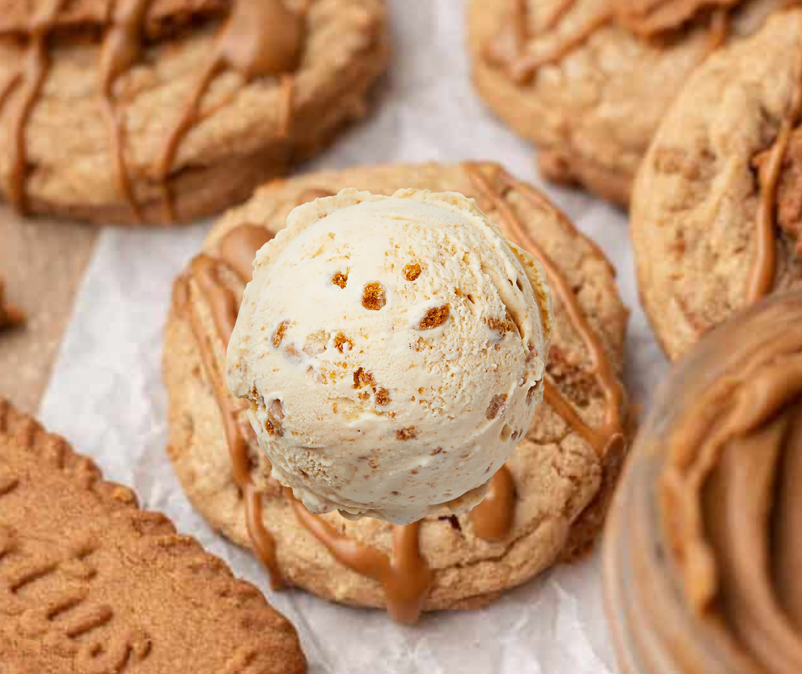

Biscoff Cookies with Caramel Ice Cream

This recipe is a delicious twist on classic biscoff cookies, paired with rich caramel ice cream to treat your sweet cravings.
Ingredients
- 2 1/2 cups white flour
- 3/4 cup of cookie butter
- 1/2 cup butter, softened
- 1/2 cup white sugar
- 3/4 cup brown sugar
- 2 large eggs
- 1 teaspoon vanilla extract
- 1/2 teaspoon baking soda and powder
- 1/4 teaspoon salt
- 18 biscoff biscuits
- 1 cup caramel ice cream
Method
- Preheat your oven to 350°F (175°C). Line a baking sheet with parchment paper.
- In a large bowl, beat together the butter, white sugar, and brown sugar.
- Add the vanilla extract and cookie butter and continue beating until creamy and fluffy.
- In a separate bowl, whisk together the flour, baking soda, and salt. Gradually add the dry ingredients to the wet ingredients, mixing until just combined.
- Stir in the biscoff biscuits (crushed) to complete the dough.
- Drop rounded tablespoons of dough onto the prepared baking sheet, spacing them about 2 inches apart.
- Bake for 13-15 minutes, or until the edges are golden brown. Remove from the oven and let cool on the baking sheet for a few minutes before transferring to a wire rack to cool completely.
- Serve the cookies with a scoop of caramel ice cream on top for an indulgent dessert. You may also add additional toppings as you like!